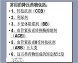
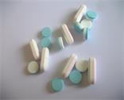

关于我们
我的专题团队
沈阳药科大学功能食品与葡萄酒学院，食品药学专业二班唐玮在沈阳药科大学计算机中心李畅老师的悉心指导下，完成了本次转专题项目的开题以及内容设计
我的开题初衷
当前社会，健康问题已经是大家最最关注的生命话题之一，而这其中大家对于用药安全的考察与重视也是越来越关注，但是目前中国药品市场监管还处在发展阶段，很多人在用药的时候存在很多疑虑和问题，在临床就诊又并不能及时的得到解答，这种情况下就会有发生很多药物不正当使用产生的危害，我从而由此萌发的想法，开展一个关于药物副作用的研究调查，。
我的课题 
我凭借自己在医药企业实习的条件，优选了两类降压药物进行了一次小范围的研究对比，展开了一项名为《两种不同降压药物对患者血压达标以及血钾水平的影响》的课题
未来的研究方向
本次研究仅仅是一个一家医院的一个小范围短期险的样本数据研究，那么未来的课题是要覆盖全方位的药物使用，比如针剂的使用，透皮制剂的副作用等等，放我们的研究 覆盖面更加广泛覆盖面更广。
探索更多的药物不良反应
药品不良反应（Adverse Drug Reaction）在按规定剂量正常应用药品的过程中产生的有害而非所期望的、与药品应用有因果关系的反应。。
药品不良反应一般可分为副作用、毒性反应、过敏反应和继发感染(也称二重感染)四大类。不良反应有大小和强弱的差异，它可以使人感到不适、使病情恶化、引发新的疾病，甚至置人于死地。如何最大限度地发挥药物的疗效，最大限度地减少不良反应，这是临床需解决的关键问题。
在现实生活中，药品不良反应的发生率是相当高的，特别是在长期使用或用药量较大时，情况更为严重甚至出现严重的毒副反应。严格地讲，几乎所有药物在一定条件下都可能引起不良反应